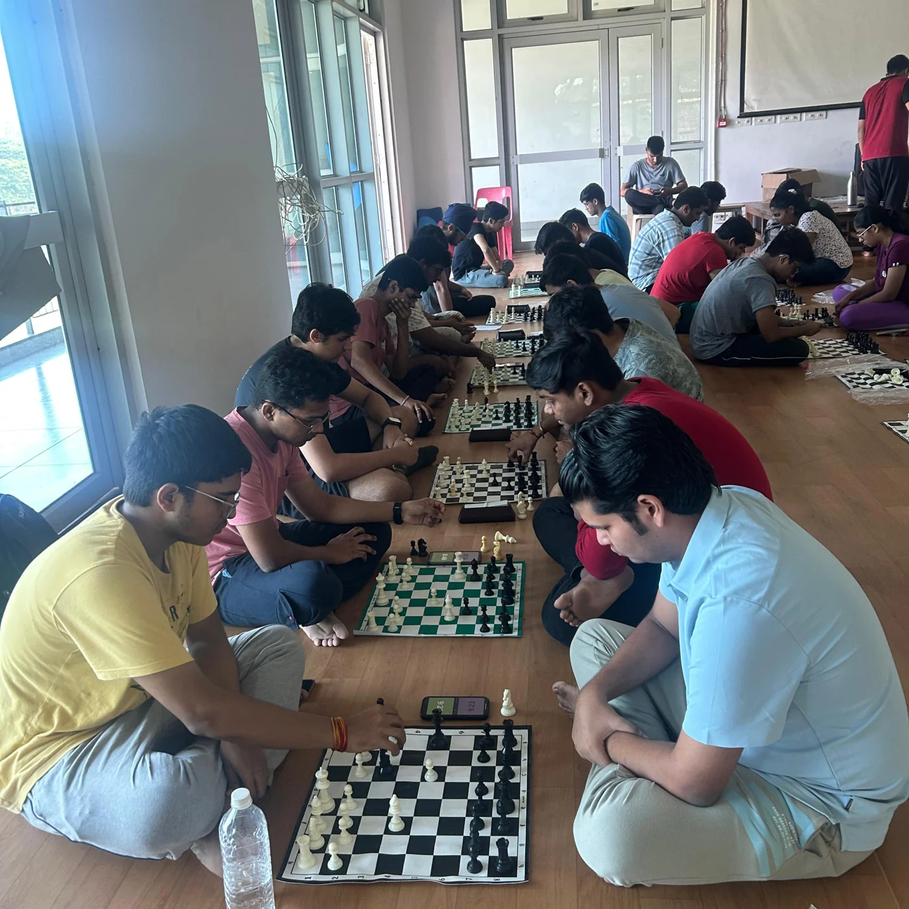
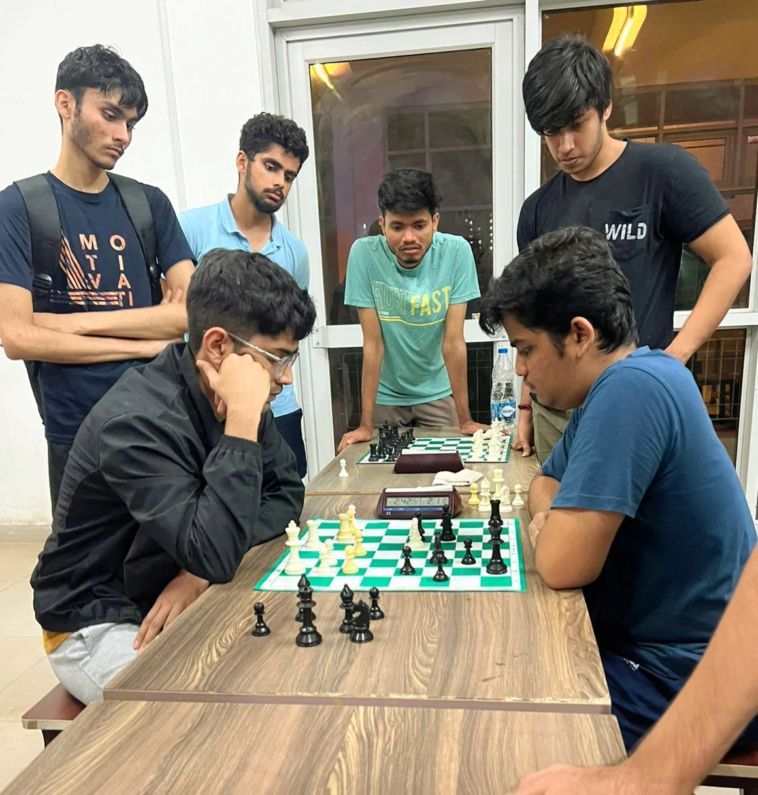
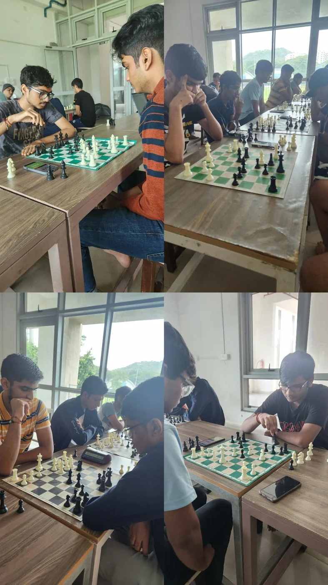
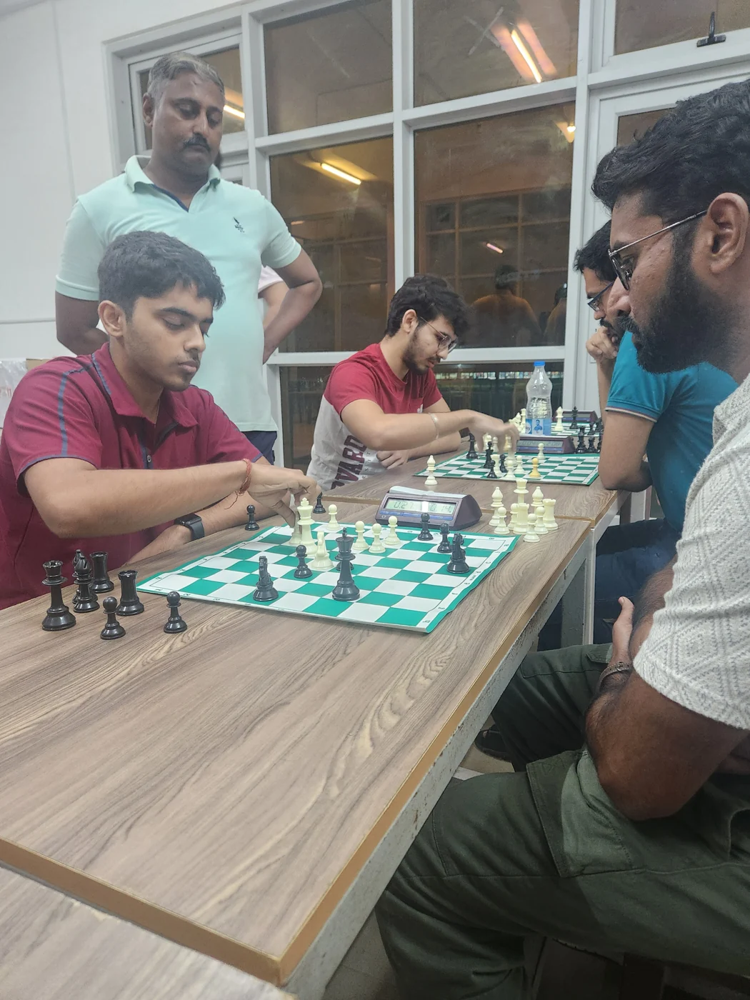
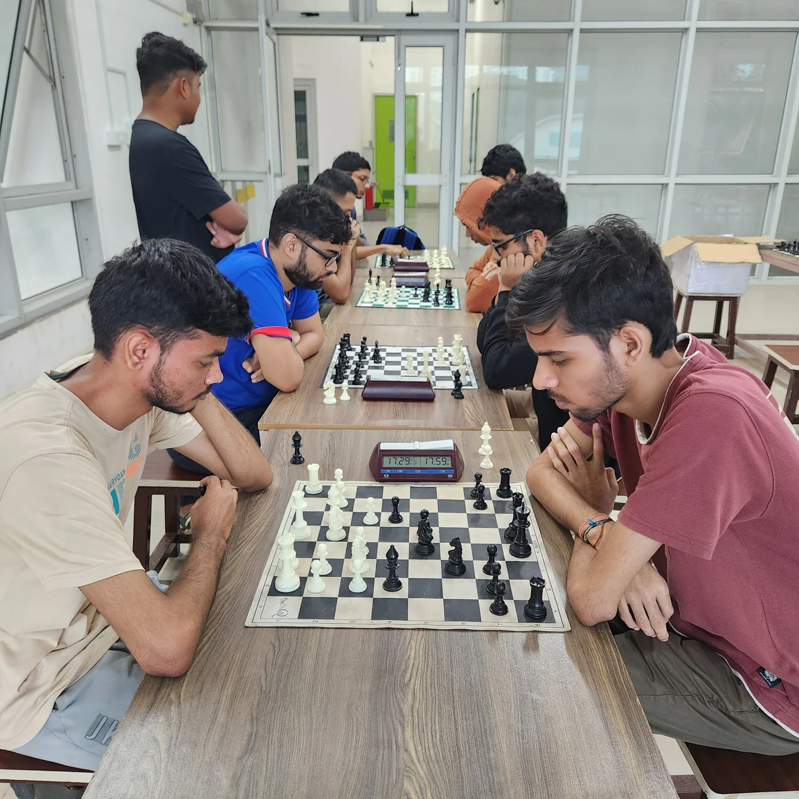

Think beyond
the obvious.
A board. A possibility.
A community to play it with.
The game / The community
Every player
starts somewhere.
One board can hold a thousand possibilities. Dark Knight Chess Club brings IIT Bombay’s chess community together around the game: its ideas, its patient discoveries and the people across the table.
Learning your first opening or looking for your next opponent? Ask the club where to begin, how to join a session and who to play with.
Make your first moveA place at the board
Pull up
a chair.
The club’s published introduction places the Board Games room on the second floor of the New SAC Gymkhana building.
Ask about current room access, practice sessions and the best time to meet other players.
Location from the institutional archive, captured October 2026. Confirm current access and arrangements with the club.
Find your starting pointPlay / Compete / Come back stronger
Give your ideas
a game.
From a first competitive game to an institute league, the club archive records several ways to take part. Check with the club for the current calendar and eligibility.
A record to build on.
- 2024
Inter-IIT Sports Meet Gold
- 2023
Inter-IIT Sports Meet 4th place
- 2022
Inter-IIT Sports Meet GoldBest player: Atharva Tayade
Historical results from the club’s archived timeline. Its introduction credits coach IM Sharad Tilak and the team. These records do not establish a current coach, upcoming event or live schedule.
Across the table
The best part?
The people.
A familiar board. A different opponent. Another conversation after the game. Five photographs from the club archive; open one to look closer.










Archival photographs. Exact dates, events and venues are unverified; they are not a current team roster.
Your next opponent is out there
It begins with
a conversation.
Ask about learning, practice, the Board Games room or the next opportunity to play. Find your place in the campus chess community.
Contact the sports officeShreyas
DKCC Manager
Institutional archive, October 2026
The named contact is from the 18 October 2026 snapshot. Confirm the current office-holder before reaching out.
Current institutional pageThe black knight’s finish
Checkmate.
The story on the board
The black knight’s line.
An original study position built around a smothered-mate pattern. The first king response is one legal choice; the remaining displayed white replies are forced. This illustrates a chess idea, rather than a historical IIT Bombay game.
- Nf2+ — The knight checks from f2.
- Kg1 — The white king steps to g1.
- Nh3+ — The knight on h3 and queen on c5 give double check.
- Kh1 — The king returns to h1.
- Qg1+ — The black queen offers itself on g1, defended by the knight.
- Rxg1 — The white rook captures the queen and fills g1.
- Nf2# — The black knight returns to f2: checkmate.
The final legal move is checkmate. The white king’s subsequent tip is a cinematic epilogue; the king is never captured.
View position and verification dataKeep discovering
Rubik’s Club ↗